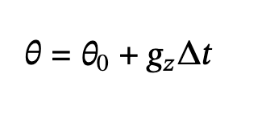

PID Control of a 1D Helicopter
Introduction
We constructed and controlled a one-degree-of-freedom helicopter system. The apparatus consists of a small ducted motor rigidly attached to one end of a lever arm. We aimed to achieve precise angular control of the arm through a Proportional Integral Derivative (PID) feedback controller in response to user specified target angles and feedback from a Inertial Measurement Unit (IMU).
The main challenge addressed in this project is integrating a microcontroller (the RP2040) with multiple systems through various communication protocols. User commands specifying parameters such as target angle are received through the UART serial interface. Simultaneously, the IMU communicates via I2C to provide accelerometer and gyroscope measurements. These measurements are processed through a complementary filter to estimate the arm angle in real time. Based on the difference between the target angle and the estimated current angle, the Pico generates Pulse Width Modulation(PWM) signals to drive the DC motor, using a custom motor control circuit. We use a VGA screen to display key parameters, target and current angle, and PID output to PWM.
Design and Testing Methods
General:
Project design comprised the integration of an arm apparatus, motor, motor controller, inertial measurement unit, VGA screen, and a robust software program on the RP2040. The project commenced with physical assembly of the arm and motor control circuit, and connection of all hardware to the RP2040.
We designed a comprehensive software program based on demo code provided by Hunter Adams. Our main function sets up I2C communication with the IMU, and initializes the VGA, MPU6050, playback button, display LED, PWM output, and semaphores. We launch a user input protothread on core zero, and launch VGA and playback protothreads on core one to maximize the opportunity each thread has to run. Measurements from the MPU6050 IMU are taken in an interrupt service routine to ensure they are sampled at a kilohertz frequency.
Our main testing strategy was incrementally adding functionality and testing by visual inspection, oscilloscope, and VGA display.
Hardware:
This project involved extensive mechanical and electronic hardware. The “helicopter” consists of a fan on the end of an acrylic lever arm. A rubber band is used to secure the fan in place in its slot on the arm. The opposite end of the arm is affixed to a metal hinge using M2.5 nuts and bolts, which is connected to a wood block using screws. The wood block is held secure to the table using a clamp.
Towards the stationary end, a MPU6050 Inertial Measurement Unit (IMU) is screwed to the lever arm. The IMU was directly attached to RP2040 GPIO ports, while the fan was connected to a motor controller, which was connected to a power source and RP2040 GPIO ports. Additionally, a VGA screen is used to display measurements and constants, which is attached via a VGA driver to RP2040. Finally, a simple pushbutton is connected to a RP2040 GPIO and ground, to trigger arm movement to a sequence of target angles when pressed.

VGA:
To drive the VGA, we send several digital signals through resistors mounted on a PCB to a VGA port. GPIO 16 and 17 provide horizontal and vertical sync signals while GPIOS 18-21 generate the color signals. The display showed real time traces of PID controller output (yellow), target angle (green), measured angle (white), and raw sensor data which is used for debugging.
Motor and Driver:
The motor is a simple fan, controlled by pulse width modulation of a 5V source signal through a motor control circuit. Turning the motor on generates voltage spikes due to the motor’s inductance; a motor controller was necessary to protect the microcontroller from noise and voltage spikes, regulate motor operation, and ensure proper motor voltage (5V). Furthermore, the circuit had to be built on a PCB since it may melt a breadboard.
It takes a PWM signal from the RP2040, and connects it to the gate of a MOSFET transistor using a 4N35 optoisolator, which isolates the RP2040 from the motor circuit. When the PWM signal is high, the motor, capacitor, and diode will be connected to a complete circuit of 5V, turning the motor on. The diode grounds reverse polarity spikes while the capacitor grounds high-frequency noise. PWM output uses GPIO 16 since this is the only RP2040 port which can be driven by PWM independently.
We setted our maximum/minimum angles to 90 and our Kp to 300, Ki to 0.75, and Kd to 300 to produce stable behavior for our PID gains.
Inertial Measurement Unit (IMU):
The MPU6050 IMU is a 6-axis sensor containing a 3 axis accelerometer and 3 axis gyroscope. It communicates via I2C on GPIO pins 8 (SDA) and 9 (SCL). Positioned near the pivot point to minimize centripetal acceleration effects, it provided measurements at 1kHz, which are used to estimate arm angle and rapidly update motor speed. Careful attention was paid to the direction the IMU was mounted: the X axis is parallel to the hinge, the positive Y points towards the fixed end of the arm, and the positive Z perpendicular to the ground when the arm is in the 90 degree position.
| RP2040 Port or GPIO PIN | Connection |
|---|---|
| 3.3 V | MPU6050 VCC |
| Ground | MPU6050 GND, VGA GND, PWM GND |
| 4 | Both chips pass: Green light works. Displays expected error messages. |
| 8 | Both chips pass: Green light works. Displays expected error messages. |
| 9 | Both chips pass: Green light works. Displays expected error messages. |
| 15 | Both chips pass: Green light works. Displays expected error messages. |
| 16 | VGA Hsync |
| 17 | VGA Vsync |
| 18 | 470 Ohm Resistor to VGA Green |
| 19 | 330 Ohm Resistor to VGA Green |
| 20 | 330 Ohm Resistor to VGA Blue |
| 21 | 330 Ohm Resistor to VGA Red |
Software
The system consists of an interrupt service routine that handles pulse width modulation (PWM) control updates, and three concurrently running threads: serial user input, VGA display, and angle sequence playback. At the top of the program, macros and global variables are defined. The main function initializes the VGA and I2C configurations, sets up PWM, multicore operations, and configures the buttons for playback and the on-board LED. Semaphores are employed to signal when the next thread should execute, ensuring proper synchronization among concurrent processes. Our software program is built upon Hunter’s MPU 6050 IMU demo code, and below is the flowchart illustrating the structure of our software.
Interrupt Service Routine
Complementary Filter:
The interrupt service routine fires 1000 times per second. When we enter the ISR, we first clear the interrupt flag that brought us here. We read the accelerometer and gyro raw values over an I2C channel. The values are 15.16 fixed-point, with the accelerometer value in g’s and gyro in deg/sec. Because the accelerometer readings are noisy, we low-pass the accelerometer raw values using an infinite impulse response (IIR) filter, right shifting by 4 (dividing by 16), producing a smoothing effect. Then, the filtered accelerometer readings are used to calculate the tilt angle (in degrees), dividing negative filtered ay by filtered az, then using the atan2 function.
The gyroscope measures the rotation rate of the arm, which can be integrated over time to estimate angular position. By multiplying the gyro reading by the sample rate of 0.001, the program computes the incremental change in angle for each time step. The updated angle is then obtained by adding this change to the previously estimated angle from the complementary filter. Mathematically, this process is expressed as:
Where 𝜃0 is the initial angle, gz is the angular velocity about the z-axis, and Δ𝑡 is the sample rate. This method is known as dead reckoning, providing smooth and responsive short term angle estimates, but small biases in the gyroscope reading accumulate over time, causing the estimated angle to drift.
Therefore, while the gyroscope provides stable short-term angle estimates, it has to be combined with the accelerometer data through a complementary filter to correct for long term drift. The accelerometer raw readings have high-frequency noise, but the measured error is zero-mean, meaning that the accelerometer does not accumulate any measurement bias. The complementary angle is calculated by high passing the gyro value and low passing the accelerometer value.
PID Controller:
After computing the complementary angle, the interrupt service routine executes the PID controller algorithm, computes and sets the control input to the set PWM function. The measured angle from the complementary filter is compared with the target angle set by the user in Thread 2, User Input Thread, to calculate the angle error.
The proportional term takes the current error signal and scales it by the proportional gain to determine the immediate control response. The integral term accumulates the error over time and is clamped to our predefined bounds of +/-3000 to prevent integrator windup, which can break the arm if the accumulated error becomes too large. The derivative term is approximated using the gyroscope reading, providing a measure of how quickly the error is changing, effectively resisting rapid changes in the system to help dampen overshoot and oscillations. This closed-loop control is shown below:
Before implementing the closed-loop control, we tested and debugged our physical system with the simpler open-loop control. In open-loop control, the motor is driven purely based on commanded input without using any feedback from the MPU6050. We directly set the PWM control to the target angle scaled by WRAPVAL/180. The issue with open-loop control is that the system is extremely sensitive to the condition in which it was molded and/or calibrated, so we closed the loop. Below is the block diagram of the open-loop control:
The ISR updates the PWM output using the hardware output compare unit, to adjust the motor voltage of the motor, to maintain and reach a desired hover angle. Finally, a semaphore is signaled to trigger the VGA display thread to update the two plots and the upper left corner readings.
Thread 1: User Input Thread
The user input thread runs on core 0. It continuously prompts the user to input a character command to adjust one of the PID gains (Kp, Ki, or Kd), target angle (t), accelerometer weight (a), or gyro weight (g) for the complementary filter. After receiving each command, the thread prompts the user for a numeric value, updating the corresponding global variable. We used a non-blocking serial read/write interface to create an easy-to-use typed-command interface without having a large effect on timing.
Thread 2: VGA Thread
The VGA thread runs on core 1. It updates the VGA display based on the global variables modified by the serial user input thread, the calculated values from the interrupt service routine (complementary angle, PID output controller, accelerometer angle, and gyro angle). The VGA thread is synchronized using a semaphore signal, updating the VGA screen to reflect the most recent PID control cycle, 1000 times per second.
At the top left of the screen, the thread displays the values of:
- Target angle
- Complementary angle
- PID controller output
- Accelerometer value weight
- Gyroscope value weight
- Accelerometer angle
- Gyroscope angle
The top plot shows:
- PID control output (in yellow)
The bottom plot shows:
- Target angle (in green)
- Complementary angle (in white)
- Accelerometer angle (in blue)
- Gyroscope angle (in red)
In addition to drawing the plots or displaying values, the VGA thread checks for a button press, and upon stabilizing the button press through a debouncer from lab 1 (also used in lab 2), signals the angle sequence playback thread to begin executing programmed angle motion sequence.

Additionally, the on-board LED turns on when it is in the VGA thread, acting as a heart beat of the system. This was useful for debugging; our connection to the VGA was faulty at times, and the LED confirmed that our code was running correctly.
Thread 3: Angle Sequence Thread
The on-board LED turns off when it is in the angle sequence thread. The angle sequence thread waits for VGA thread to signal it to run via a semaphore. After the playback thread receives permission from the VGA thread, it blocks the VGA thread from drawing, and quickly executes its first motion sequence of 90 degrees. After the interrupt service routine executes the command, the playback thread yields for 5 seconds, allowing the VGA thread to run and draw the changed motion, before blocking the VGA thread again and commanding the next position. This process was repeated for all the motions required for check-off:
- 90 degrees for 5 seconds
- 120 degrees for 5 seconds
- 60 degrees for 5 seconds
- Back to 90 degrees for 5 seconds
Result and Testing
Our final system achieved partial credit for the final demonstration. While the core functionality of the PID controller and angle estimation was fully functional, we did not complete the full week 2 and week 3 checkoffs on schedule. During the final demonstration at the end of week 3 labs, all system components were functioning correctly, the IMU provided accurate angle measurements through the complementary filter, the motor responded to PWM commands, the serial interface accepted different parameters changes and the PID controller maintained targeted angles really well. However, we received partial credit because we did not implement the low-pass filter on the controller output signal, which was required for proper display and noise reduction on the VGA.
Testing (P, then D, then I):
To test the system, we adopted an incremental testing approach to develop and tune the PID controller. This is to build up complexity gradually to isolate issues and understand what each controller component is supposed to do. The open-loop control code (control = target_angle*WRAPVAL/180) was used initially to verify motor response before implementing closed loop control. We began by implementing only the proportional term of the PID by setting the Kp to approximately 200. This allowed us to verify basic functionality, the system responded to angle errors and could reach target positions. Next we added the D term to dampen the oscillations to improve stability. First attempted to calculate the derivative as the difference between consecutive errors (derivative_error = error - previous_error) but this was problematic because it made the noise worse. When we experimented with our code, we found that using gyroscope measurement like (Kd*fix2float15(gyro[0]) provided better damping performance.
Then we implemented the I term to eliminate steady-state error. The integral term (sum_error) accumulated error over time to reach the exact target angle. We settled Ki to 0.75 and then discovered the problem of integral windup during large angle changes. When the target angle changed dramatically, the integral term would accumulate a large value causing overshoot. To solve this, we clamped the integral accumulator using conditional statements to check if sum_error > 3000 or sum_error < -3000. The three PID gains were selected based on the observed visuals of the system. For example, if the stick bounced or overshot too much, we increased the D term to add damping. If it didn’t go high enough or responded too slowly, we increased the P term to stiffen the response. We only increased the I term when there was a steady state offset from the target angle, tuning it enough to remove the long-term error without reintroducing oscillations.
PID Results:
We found that the parameters which best controlled the angle change were as follows:
| Parameter | Value |
|---|---|
| Kp | 200 |
| Ki | 0.75 |
| Kd | 300 |
Unfortunately, despite our best efforts with tuning, we found that the settling time was over five seconds for a change in angle over thirty degrees; settling time was about four seconds for a thirty degree change, eight for sixty degrees, and eleven for ninety degrees. However, we found stable behavior for the full thirty through one-twenty degree range.
Wrong Conversion:
We changed from fixed-point to floating-point arithmetic for PID calculations to achieve precision, implementing the equation PID_controller_output = Kp*error + Ki*sum_error + Kd*fix2float15(gyro[0]). The complementary filter used weights of 0.999 (gyro) and 0.001 (accel), with low-pass filtering (>>4 bit shift) on the accelerometer data before angle calculation. Control signals were clamped to 0-4000 for safety, and PWM only updated on value changes. The control loop executed at exactly 1 kHz via PWM interrupt (CLKDIV=25.0, WRAPVAL=5000) on an overclocked 150 MHz system. This fixed our PID integration when controlling on the computer.
Hardware Issues:
Throughout the development process, we encountered significant hardware failures that required troubleshooting and component replacement. This impacted our progress toward meeting weekly checkpoints. The ducted fan motor failed twice during testing and required replacement on both occasions. These failures were caused by the wires being too short and “pulling” on the internal components within the fan. After the second replacement, we decided to rubber band it to the lever arm and also make the wires longer. This caused less tension and made the connection more stable. The MPU6050 IMU became non-functional partway through the lab, with the blue power LED failing to illuminate. This is a clear indication that the chip has been damaged. This required completely resoldering the failed IMU from the glass part and soldering a replacement MPU6050. The failure was likely caused by either a wiring error or damage to the box. After replacing the IMU, we took extra care to verify proper power supply connections and ensured there are no touching wires. Our wire connections are mechanically unreliable throughout the project with bad connection or no connection. We made a lot of trips to the soldering station to reinforce solder joints and repair broken connections. The mechanical stress from the moving lever arm, combined with the vibrations from the motor, exacerbated these connection issues.
These hardware reliability issues consumed significant lab time that could have been spent on software tuning and feature implementation, contributing to our inability to complete the week 2 and week 3 checkoffs on schedule.
Despite replacing the MPU6050, we've noticed that our VGA plots still occasionally freeze. To investigate further, we connected the SDA and SCL lines of the IMU to an oscilloscope and monitored the complementary angles on the serial terminal to confirm that we were receiving readings from the IMU. The I2C SDA and SCL lines appeared to be functioning correctly. Ultimately, we resolved the issue by securing some of the wires with tape and being more meticulous about the arrangement of our components and wiring.
Conclusion
The lab comprised the implementation of a closed-loop PID control system for a one degree of freedom helicopter using the RP2040 microcontroller. We integrated multiple embedded systems concepts including I2C sensor communication complementary filtering for angle estimation, PWM motor control, and real time parameter tuning through a serial interface. Despite encountering significant hardware challenges including motor failure, a broken IMU, unreliable wire connections, and a defective plug discovered near the deadline, we achieved a functional system capable of stable angle control. Although we did not complete the week 2 and week 3 checkoffs on schedule due to these hardware setbacks, we received partial credit for the final demonstration because all core functionality was operational, aside from the required low-pass filter on the PID signal display. The experience provided valuable lessons on the importance of careful hardware construction, incremental testing, and ensuring a sound overall setup so small issues which may arise are caught earlier.
Work Distribution
Michelle Yang: Lead the writing and debugging of majority of the code/logic.
Diane Pillsbury: Assisted immensely with determining appropriate pid parameters and debugging the program.
Xia Yan Zhao: Assisted minimally with code writing and debugging the program.